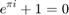

Contents
Script to integrate kuramoto equations and plot the results
%parameters %---------------------------------------------------------------

p.K = -3.5; % coupling strength nIters = 20000; %number of iterations tBegin = 0; tEnd = 200; %network parameters nPerColor = [10 10 10 10 10 10 10 10]; %number of neurons associated with each color p.N = sum(nPerColor); %number of oscillators baseLNLN = [0 1 1 1 1 1 0 0; % the connectivity between colored groups 1 0 1 1 1 0 1 0; 1 1 0 1 1 1 0 1; 1 1 1 0 1 0 1 0; 1 1 1 1 0 1 0 0; 1 0 1 0 1 0 0 0; 0 1 0 1 0 0 0 0; 0 0 1 0 0 0 0 0]; %oscillator frequency Omega = 0; %mean frequency a = Omega; b =Omega; %range of oscillator frequencies p.w = a + (b-a).*rand(p.N,1); %distribution of osc frequencies %---------------------------------------------- %construct graph p.G = graphGenerator(nPerColor,baseLNLN);%,'baseAdjList',baseAdjList,'pConn',pConn); %generate the g %initial condition thetaInit = -pi + 2*pi.*rand(p.N,1); %uniform distribution \in [-pi,pi] %integration [t,theta] = rk4(@kuramotoMultipleColors,tBegin, tEnd,thetaInit,nIters,p); theta = mod(theta,2*pi); %theta is in the interval [0 2pi] theta = theta - pi; %shift the interval to [-pi pi] figure; imagesc(t,[1:p.N],theta)
Undefined function 'graphGenerator' for input arguments of type 'double'. Error in runKuramotoMultipleColors (line 33) p.G = graphGenerator(nPerColor,baseLNLN);%,'baseAdjList',baseAdjList,'pConn',pConn); %generate the g
movie
figure x = cos(theta); y = sin(theta); % mTheta = circ_mean(theta,[],1); %circular mean of theta % rTheta = 1 - circ_std(theta,[],[],1); %circular standard deviation of theta % mx = rTheta.*cos(mTheta); my = rTheta.*sin(mTheta); Colors = rand(length(nPerColor),3); colorInd2 = cumsum(nPerColor); colorInd1 = [1,colorInd2(1:end-1)+1]; for ii = 10000:nIters for jj = 1:length(colorInd1) plot(x(colorInd1(jj):colorInd2(jj),ii),y(colorInd1(jj):colorInd2(jj),ii),'o','MarkerFaceColor',Colors(jj,:),'MarkerEdgeColor',Colors(jj,:),'MarkerSize',2); hold on mTheta(jj,ii) = circ_mean(theta(colorInd1(jj):colorInd2(jj),ii),[],1); rTheta(jj,ii) = 1 - circ_std(theta(colorInd1(jj):colorInd2(jj),ii),[],[],1); %circular standard deviation of theta mx = rTheta(jj,ii)*cos(mTheta(jj,ii)); my = rTheta(jj,ii)*sin(mTheta(jj,ii)); line([0,mx],[0,my],'Color',Colors(jj,:),'LineWidth',2); end hold off % line([0,mx(ii)],[0,my(ii)],'Color','k','LineWidth',4); hold off axis([-1 1 -1 1]); axis square drawnow end % movie(M,1)